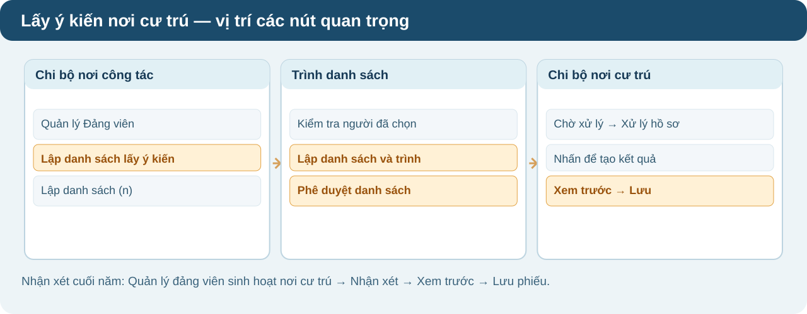

Thu, nộp đảng phí
Hồ sơ đảng phí được tự động tạo theo kỳ. Đảng viên xem nghĩa vụ, kiểm tra số tiền và thanh toán; nếu sai mức đóng thì gửi yêu cầu điều chỉnh.
Đảng viên — nộp cho bản thân
- Mở chức năng: Đăng nhập Hệ thống TTHC của Đảng → chọn thẻ “Thu nộp Đảng phí” → phần “Thu nộp Đảng phí cho bản thân”, bấm “Xem chi tiết nghĩa vụ”.
- Chọn kỳ: Tại “Thông tin nghĩa vụ nộp đảng phí”, bấm “Kỳ nộp”, chọn tháng cần nộp. Xem trạng thái ở bên cạnh ô chọn kỳ.
- Đối chiếu số tiền: Kiểm tra đối tượng BHXH, mức đóng, truy thu/giảm trừ, tỷ lệ miễn/giảm và “Giá trị đảng phí đảng viên cần đóng”.
- Thanh toán: Nếu đúng, bấm “Đóng đảng phí” → kiểm tra “Thông tin khoản nộp” → chọn QR/VNPT Money hoặc phương thức khác → bấm “Đóng đảng phí” và thực hiện thanh toán.
- Xem kết quả: Vào “Dịch vụ công của tôi → Đảng phí” để xem lịch sử, trạng thái hồ sơ và hóa đơn. Kỳ đã nộp thành công chỉ xem.
Mức đóng không đúng — gửi điều chỉnh
- Tạo yêu cầu: Ngay màn “Thông tin nghĩa vụ nộp đảng phí”, bấm “Yêu cầu điều chỉnh”; nếu chưa có căn cứ tính mức đóng, bấm “Gửi thông tin mức đảng phí”.
- Gửi hồ sơ: Chọn “Phân loại điều chỉnh đảng phí”, điền mức đề xuất và lý do; đính kèm ít nhất một minh chứng theo yêu cầu → gửi yêu cầu.
- Cán bộ phê duyệt: Tài khoản bí thư/cán bộ được phân quyền vào “Quản lý hồ sơ Đảng phí → Hồ sơ cần điều chỉnh” → lọc kỳ/người nộp → “Xử lý yêu cầu” → kiểm tra minh chứng → nhập mức và lý do → “Phê duyệt điều chỉnh”.
- Hoàn tất: Đảng viên nhận thông báo; hồ sơ chuyển sang “Chờ nộp đảng phí” với mức đã được duyệt, sau đó thực hiện thanh toán.
Nộp hộ / miễn hoàn toàn
- Nộp hộ: Trong thẻ “Thu nộp Đảng phí”, chọn mục nộp hộ → “Xem chi tiết nghĩa vụ”; tìm đúng đảng viên theo số thẻ, họ tên, ngày sinh → chọn kỳ và kiểm tra số tiền trước khi thanh toán.
- Miễn 100%: Nếu mức miễn 100% đã được cấu hình đúng, hệ thống hiển thị nút “Hoàn thành” thay vì yêu cầu thanh toán có tiền.
▧ Xem hình vị trí nút bấm
Đối chiếu các tên menu, nút bấm được tô nổi bật trước khi thực hiện.


Hướng dẫn thao tác · 05/11/2026↓ Tải hướng dẫn PDF
Chuyển sinh hoạt đảng chính thức
Giấy giới thiệu điện tử gồm 6 vị trí xác nhận của tổ chức đảng nơi đi và nơi đến. Mỗi đơn vị xử lý hồ sơ ngay trong danh sách chờ của tài khoản được phân quyền.
Đảng viên — tạo và theo dõi hồ sơ
- Khai hồ sơ: Đăng nhập bằng VNeID mức 2 → chọn “Chuyển sinh hoạt đảng chính thức” → khai nơi tiếp nhận, lý do và các trường bắt buộc; đính kèm bản tự kiểm điểm, căn cứ chuyển sinh hoạt.
- Nộp và theo dõi: Kiểm tra lại biểu mẫu rồi nộp hồ sơ. Lưu mã hồ sơ để theo dõi thông báo và giấy giới thiệu điện tử khi hoàn thành.
Chi bộ nơi đi — tiếp nhận, xác nhận vị trí 1
- Mở hồ sơ: Đăng nhập tài khoản chi bộ nơi đi → “Quản lý hồ sơ TTHC khác → Chờ xử lý” → tìm hồ sơ → ở cột Hành động bấm “Xử lý hồ sơ”.
- Điền giấy giới thiệu: Trong “Tài liệu kết quả xử lý”, bấm “Nhấn để tạo kết quả xử lý”; nhập “Kính gửi”, “Đã đóng đảng phí hết tháng”, “Hồ sơ kèm theo” và ngày phê duyệt.
- Gửi cấp trên: Bấm “Xem trước” → đối chiếu nội dung → “Lưu” → trở lại màn Xử lý hồ sơ và bấm “Phê duyệt hồ sơ”. Hệ thống chuyển tiếp cho đơn vị kế tiếp.
Đảng ủy nơi đi và nơi đến — ký số
- Đảng ủy trực thuộc cơ sở nơi đi (nếu có): Vào “Quản lý hồ sơ TTHC khác → Chờ xử lý” → “Xử lý hồ sơ” → “Nhấn để tạo kết quả xử lý” → kiểm tra vị trí 2 → “Xem trước → Ký số → Lưu → Phê duyệt hồ sơ”.
- Đảng ủy cơ sở nơi đi: Thực hiện tương tự ở vị trí 3, ký số và phê duyệt để chuyển hồ sơ tới đảng ủy cơ sở nơi đến.
- Đảng ủy cơ sở nơi đến: Thực hiện xử lý vị trí 4: “Chờ xử lý → Xử lý hồ sơ → Nhấn để tạo kết quả xử lý → Xem trước → Ký số → Lưu → Phê duyệt hồ sơ”.
- Đảng ủy trực thuộc cơ sở nơi đến (nếu có): Kiểm tra vị trí 5, ký số, lưu và phê duyệt để chuyển đến chi bộ tiếp nhận.
Chi bộ nơi đến — tiếp nhận và kết thúc
- Tiếp nhận: Vào “Quản lý hồ sơ TTHC khác → Chờ xử lý” → “Xử lý hồ sơ” → “Nhấn để tạo kết quả xử lý”; kiểm tra nội dung của vị trí 6.
- Kết thúc: Bấm “Xem trước → Lưu → Phê duyệt hồ sơ”. Hệ thống kết thúc luồng và lưu giấy giới thiệu điện tử.
▧ Xem hình vị trí nút bấm
Đối chiếu các tên menu, nút bấm được tô nổi bật trước khi thực hiện.


Hướng dẫn thao tác · 05/11/2026↓ Tải hướng dẫn PDF
Lấy ý kiến nhận xét nơi cư trú
Có ba cách thực hiện: giới thiệu sinh hoạt nơi cư trú; lập danh sách lấy nhận xét phục vụ công tác cán bộ; chi bộ nơi cư trú chủ động lập phiếu nhận xét cuối năm.
Chuẩn bị — cập nhật chi bộ nơi cư trú
- Đảng viên: Nếu sau đăng nhập xuất hiện “Cập nhật thông tin chi bộ sinh hoạt nơi cư trú”, chọn đúng đảng bộ/chi bộ; hoàn thành trường bắt buộc → bấm “Cập nhật”.
- Cán bộ quản lý: Vào “Quản lý Đảng viên → Quản lý Đảng viên” → tại người còn thiếu thông tin, bấm “Cập nhật Chi bộ nơi cư trú” → chọn tổ chức đảng → “Cập nhật”.
Quy trình 1 — tạo giấy giới thiệu
- Mở hồ sơ: Tài khoản chi bộ có quyền vào “Quản lý hồ sơ TTHC khác → Chờ xử lý” → bấm “Tạo mới hồ sơ”.
- Chọn người: Trong cửa sổ “Tạo mới hồ sơ”, chọn đơn vị quản lý trực tiếp; tìm bằng họ tên/CCCD/số thẻ; tích chọn đúng một đảng viên → bấm “Tiếp tục”.
- Gửi hồ sơ: Khai phần thông tin giấy giới thiệu và các trường bắt buộc theo màn hình → xem lại → gửi hồ sơ để luân chuyển tới nơi cư trú.
Quy trình 2 — lấy ý kiến phục vụ công tác cán bộ
- Chi bộ nơi công tác: Vào “Quản lý Đảng viên → Quản lý Đảng viên” → bấm “Lập danh sách lấy ý kiến nơi cư trú” → tích chọn đảng viên → “Lập danh sách (n)”.
- Trình cấp trên: Kiểm tra danh sách, có thể thêm/xóa người → bấm “Lập danh sách và trình lên cấp trên”.
- Đảng ủy cấp trên: Vào “Quản lý hồ sơ TTHC khác → Phê duyệt danh sách lấy ý kiến nơi cư trú” → lọc trạng thái “Chờ phê duyệt” → bấm “Phê duyệt” hoặc “Từ chối”.
- Chi bộ nơi cư trú: Vào “Quản lý hồ sơ TTHC khác → Chờ xử lý” → “Xử lý hồ sơ” → “Nhấn để tạo kết quả xử lý” → điền đánh giá, địa danh, ngày và người ký → “Xem trước → Lưu → Phê duyệt hồ sơ”.
- Đơn vị cấp trên nơi cư trú: Mở phiếu đã lập tại “Tài liệu kết quả xử lý” → nhập thông tin xác nhận → “Xem trước → Ký số → Lưu → Phê duyệt hồ sơ”; bước đóng dấu dùng chữ ký số tổ chức.
Quy trình 3 — nhận xét cuối năm
- Chi bộ nơi cư trú: Vào “Quản lý Đảng viên → Quản lý đảng viên sinh hoạt nơi cư trú” → tìm đảng viên → cột Hành động bấm “Nhận xét”.
- Lập phiếu: Chọn đánh giá từng tiêu chí, nhập “Nhận xét khác” (nếu có), địa danh, ngày lập và người xử lý → bấm “Xem trước” để kiểm tra.
- Lưu và ký: Bấm “Lưu phiếu” để tạo hồ sơ; đảng ủy cấp trên mở hồ sơ chờ xử lý và ký số, đóng dấu, phê duyệt theo phân quyền.
▧ Xem hình vị trí nút bấm
Đối chiếu các tên menu, nút bấm được tô nổi bật trước khi thực hiện.

Hướng dẫn thao tác · 05/11/2026↓ Tải hướng dẫn PDF
Chuyển sinh hoạt đảng tạm thời
Thực hiện hai chiều: đảng viên đề nghị chuyển đi; khi kết thúc thời gian tạm thời, chi bộ nơi sinh hoạt tạm thời khởi tạo thủ tục chuyển trở về.
Chiều đi — đảng viên đề nghị chuyển tạm thời
- Đảng viên nộp hồ sơ: Đăng nhập bằng VNeID mức 2 → chọn “Chuyển sinh hoạt đảng tạm thời” → khai nơi đến, thời gian, lý do; đính kèm quyết định/căn cứ và bản tự kiểm điểm → nộp hồ sơ, lưu mã.
- Chi bộ chính thức nơi đi: Chi ủy/bí thư kiểm tra đối tượng, thời gian và tài liệu → lập giấy giới thiệu, ký số vị trí 1 để chuyển lên đảng ủy quản lý.
- Đảng ủy nơi đi: Kiểm tra hồ sơ đảng viên điện tử, ký số vị trí 2 để chuyển sang đảng ủy nơi đến.
- Đảng ủy nơi đến: Kiểm tra và ký số vị trí 3, giới thiệu đảng viên đến chi bộ tạm thời.
- Chi bộ tạm thời: Xác nhận tiếp nhận, ký số vị trí 4; hệ thống cập nhật tình trạng sinh hoạt tạm thời.
Chiều về — kết thúc sinh hoạt tạm thời
- Chi bộ tạm thời khởi tạo: Khi đảng viên hoàn thành nhiệm vụ, chi bộ đang quản lý tạm thời mở hồ sơ chuyển về, ghi nhận xét vào bản tự kiểm điểm, ký số vị trí 5.
- Đảng ủy nơi tạm thời: Kiểm tra hồ sơ, ký số vị trí 6 chuyển trở về đảng ủy nơi sinh hoạt chính thức.
- Đảng ủy nơi chính thức: Tiếp nhận, kiểm tra bản nhận xét, ký số vị trí 7 và chuyển về chi bộ cũ.
- Chi bộ chính thức: Ký số vị trí 8, tiếp nhận đảng viên trở lại; hệ thống cập nhật sinh hoạt chính thức và việc thu nộp đảng phí.
▧ Xem hình vị trí nút bấm
Đối chiếu các tên menu, nút bấm được tô nổi bật trước khi thực hiện.

Hướng dẫn thao tác · 05/11/2026↓ Tải hướng dẫn PDF